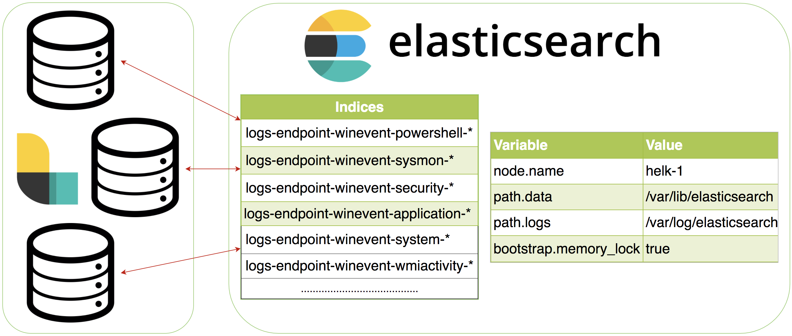

Elasticsearch uses heap, which can more specifically be referred to as memory/RAM, in order to perform various functions.
A list of some of the functions this heap/memory does is as follows (keep in mind this is not an exhaustive list):
As you can see, heap and the amount of it is important in a healthy setup. The HELK installation process uses various functions to try to set the "perfect" amount of heap, however there are thousands of variables in all the different ways people use/install HELK.
Therefore, we are unable to account for them all and thus our logic will never be perfect and unfortunately may not work best for you. However, we have given you an ability to set your own heap and we have described the logic if you choose to let HELK determine what to set it.
Heap can and or is set one of four ways, as detailed below.
This is based on the available memory and variables shown in the code block below.
It’s very important to note available memory, not the amount of memory the host has.
An example to show why this is critical to understand.. If you have a 100GB RAM server, but the server is actively using 90GBs of RAM - then you will NOT get the max 31GB heap/memory for elasticsearch. In this example you would actually end up getting roughly 3 GBs for the heap. Because, with only 10 GBs of available/free memory, it could cause drastic issues to lock up all of the remaining memory!
if available memory >= 1000 MBs and <= 5999 MBs:
then set to 2000 MBs
else if available memory => 6000 MBs and <= 8999 MBs:
then set to 3200 MBs
else if available memory => 9000 MBs and <= 12999 MBs:
then set to 5000 MBs
else if available memory => 13000 MBs and <= 16000 MBs:
then set to 7100 MBs
else:
if available memory => 31 GBs:
then set to 31 GBs
else:
set to available memory in GBsIn order to define your own heap settings, in the file HELK/docker/helk-elasticsearch/config/jvm.options
edit the following two lines that begin with
#-Xms
#-Xmx
Then make sure to restart elasticsearch.
Always set the min and max JVM heap size to the same value
Also, you will be restarting elasticsearch. Therefore your cluster will temporarily be down as the elasticsearch service/database is coming back online
Here is an example of how to perform the above:
# Edit the file jvm file
sudo nano HELK/docker/helk-elasticsearch/config/jvm.options
# Resulting lines (as mentioned that you should edit from above)
# should look something like the following if you wanted to set the heap to 16GBs
-Xms16g
-Xmx16g
# Restart elasticsearch
docker restart helk-elasticsearchES_JAVA_OPTS to the docker config file Which docker config file to use is shown later.
You will add this value under services.helk-elasticsearch.environment.
Example, if I used the option for ELK + Kafka with no license and no alerting and I wanted to set the heap to 16GBs
Then I would edit HELK/docker/helk-kibana-analysis-basic.yml and add the following line under the environment seciton:
- "ES_JAVA_OPTS=-Xms16g -Xmx16g"
Then make sure rebuild the elasticsearch docker container.
Always set the min and max JVM heap size to the same value
Also, you will be restarting elasticsearch. Therefore your cluster will temporarily be down as the elasticsearch service/database is coming back online
Note if you are using (elastic) license you will need to set your ELASTIC_PASSWORD and KIBANA_UI_PASSWORD variables (and logstash password if applicable)
Here is how to perform the above:
# Example config (only showing the beginning lines) Note, that these settings may not match your config exactly, but that the important thing is to have the value under the environment section
version: '3.5'
services:
helk-elasticsearch:
image: docker.elastic.co/elasticsearch/elasticsearch:7.3.1
container_name: helk-elasticsearch
secrets:
- source: elasticsearch.yml
target: /usr/share/elasticsearch/config/elasticsearch.yml
volumes:
- esdata:/usr/share/elasticsearch/data
- ./helk-elasticsearch/scripts:/usr/share/elasticsearch/scripts
- ./helk-elasticsearch/config/jvm.options:/usr/share/elasticsearch/config/jvm.options
entrypoint: /usr/share/elasticsearch/scripts/elasticsearch-entrypoint.sh
environment:
- cluster.name=helk-cluster
- node.name=helk-1
- xpack.license.self_generated.type=basic
- xpack.security.enabled=false
- "ES_JAVA_OPTS= -Xms16g -Xmx16g"
ulimits:
memlock:
soft: -1
hard: -1
nproc: 20480
nofile:
soft: 160000
hard: 160000
restart: always
networks:
helk:
# Rebuild the elasticsearch docker container
`docker-compose -f HELK/docker/helk-kibana-analysis-basic.yml up --build -d`Example bash variable such as:
export ES_JAVA_OPTS="-Xms16g -Xmx16g"
Then run the following using your own docker config file.
docker-compose -f $PlaceDockerConfigFileNameHere up --build -d
Only use this option if you explicitly need to. Please know what your getting into to ;)